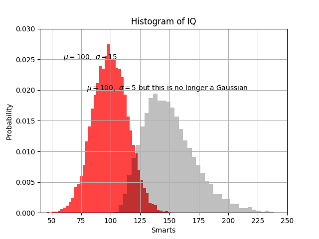

Git: version control
Git: setting your environnement
On a terminal, specify the email address with which you will make your commits:
$ git config --global user.email "prenom.nom@domaine.fr"Of course Adapt the email address prenom.nom@domaine.fr to your case!
Create an SSH key
Unix system
The SSH is needed to get a smooth authentication to the remote repository. In a terminal:
$ ssh-keygen -t rsa -b 4096 -C prenom.nom@domaine.frAccept the default option (keys saved in ~/.ssh and no passphrase)
ssh-addSee the following link for more details: https://help.github.com/en/github/authenticating-to-github/generating-a-new-ssh-key-and-adding-it-to-the-ssh-agent
Windows
Please see the tutorial at https://www.theserverside.com/blog/Coffee-Talk-Java-News-Stories-and-Opinions/GitHub-SSH-Windows-Example
Setting up your Github account
GitHub is a web hosting service for remote repositories using git. GitHub includes additional features for collaboration, such as bug tracking, requests to add features or task management. Unfortunately,s GitHub does not natively include a Continuous Integration system. Note that there are other git-based hosting websites such as GitLab or BitBucket.
Create a GitHub account
Please go to https://github.com/ and follow the instructions for creating or activating your account.
Add your SSH key
To display your public key, simply type in a terminal,
$ cat ~/.ssh/id_rsa.pubCopy the result into the clipboard and add your key to your GitHub account. See https://help.github.com/en/github/authenticating-to-github/adding-a-new-ssh-key-to-your-github-account
To check your installation, please follow the instructions https://help.github.com/en/github/authenticating-to-github/testing-your-ssh-connection
Create a remote repository
Let us create a remote repository hosted on your GitHub account.
On GitHub, click on the + symbol at the top right of the page, then New repository. Give the name FirstRepo to your new project and a short description.
Create a public repository, meaning that everyone can access your code (read-only). Finish by clicking on Create repository.
Follow the instructions provided by GitHub to create your local copy of the repository: 1. Create a new folder called FirstRepo in your home directory and cd to it 2. Then execute the following command
echo "# FirstRepo" >> README.md
git init
git add README.md
git commit -m "first commit"
git remote add origin git@github.com:XXXXXXXXXXXXXXXXXX/FirstRepo.git
git push -u origin masterExercise
- Create a text file called
.gitignorewith the following content:
*.pdf
*~- Create a commit and push it to your repository. What is the purpose of this file? See https://github.com/github/gitignore
Interact with other users
The purpose of this exercise is to learn how to use git as a collaboration tool for software development.
Using an existing repository
Browse the repository at https://github.com/bcharlier/HAX712X-2022. What is this module able to do?
Exercise
Fork the repository by following these steps:
- On GitHub, click on the fork icon.
- A copy is added to your GitHub space. Clone it (this copy!) to get a local repository.
- In a terminal, inspect the output of the command
git remote get-url origin
Debugging
A bug has appeared in the python module after a commit. An issue has been opened in the bug tracking system at https://github.com/bcharlier/HAX712-2022/issues. Your goal is to find the problem… and then to fix it on your forked repository. Finally, you will be able to submit a Pull Request to the original repository to share your fix.
Identification of the bad commit
Your goal is to identify the commit(s) that caused the bug. Use git log, git diff, git checkout to identify the commit responsible for the problem.
Create a new branch to fix the problem
To fix a complex bug or add a new feature, it is often necessary to modify several parts of the code. We create a branch, where we make all the commits dedicated to solvings the bug. The idea is to maintain a stable version, in the branch master, separated from the developing version, which may contain bugs.
Exercise
- Create a local branch
Fix_EOL_Error - Push this local branch to your remote repo.
- Checkout to the
Fix_EOL_Errorbranch, and fix the bugs. The branchmasterwill not be affected. - Merge the fix into the branch
master - suppress the local branch
Fix_EOL_Errorand the remoteorigin/Fix_EOL_Errorbranch
Pull request
Your work about bug fixing may interest the original author of the project. On GitHub, open a pull-request. Pull-requests are a set of commits that can be integrated directly by the author of the project in its repository, and are thus a powerful tool for working with others.
Branch Merging and Solving conflicts
Exercise
- Checkout to the branch
NonGaussian. Try to figure out what has changed compared to the master branch. - Try to merge the branch
NonGaussianto the branchmaster. - Where are located the conflicts? They are shown with the following decorator.
<<<<<<< HEAD
some code on the current branch
=======
some code on the branch to be merged
>>>>>>> NonGaussian- Resolve them by plotting the two histograms on the same plot. Namely, produce a figure like this:
To go further
Please visit https://learngitbranching.js.org/